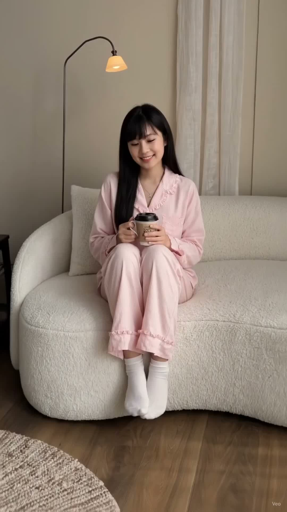
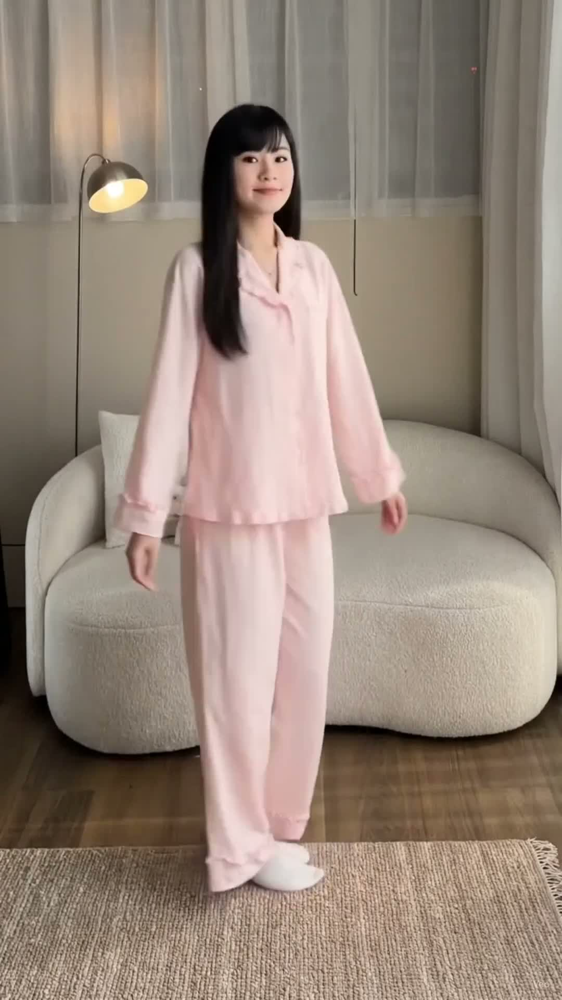
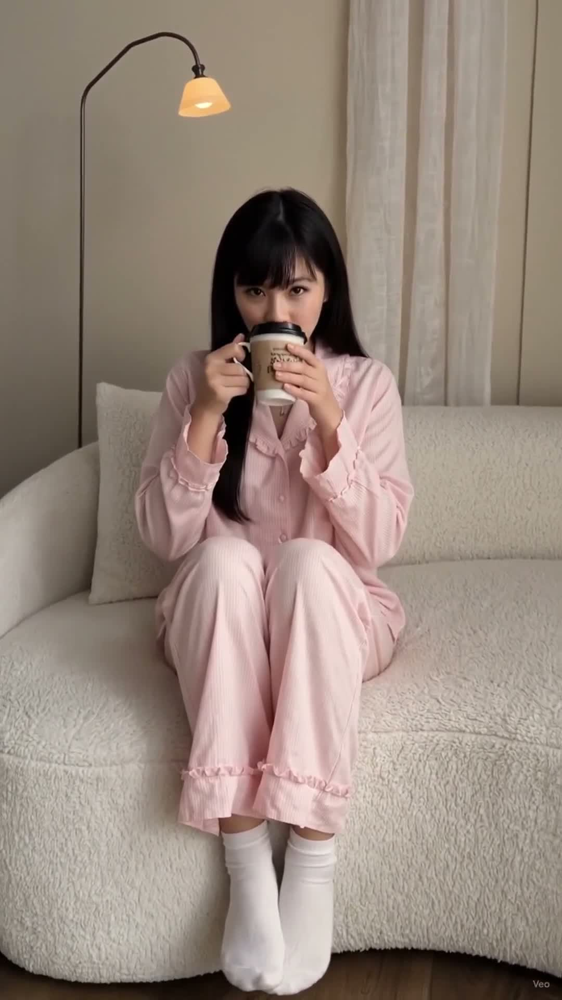
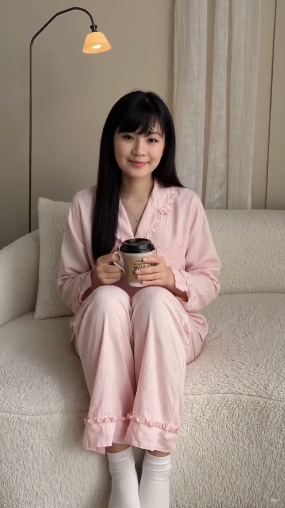

Bộ pyjama dài kẻ sọc LIPU hồng: mặc đi ngủ vẫn xinh

Tối nay chuẩn bị đi ngủ, Lisa chọn bộ pyjama dài kẻ sọc cổ bèo LIPU #6649 màu hồng: áo dài tay cổ bèo + quần dài kẻ sọc hồng nhạt + tất trắng. Vải mềm mát, cổ bèo xinh — mặc ở nhà thư giãn hay đi ngủ đều thoải mái mà vẫn xinh.
Đọc trước khi mua: bài viết này là gợi ý phối đồ lấy cảm hứng từ mẫu bộ pyjama dài đang bán chạy trên Shopee. Lisa là nhân vật AI, nên bài viết không phải bài đánh giá sản phẩm Lisa đã mặc thật hay đã dùng thử. Giá, chất liệu và size cần kiểm tra lại trên trang bán trước khi mua. Link mua hàng (affiliate — mua qua link, Lisa Style có thể nhận một khoản hoa hồng nhỏ mà giá bạn trả không đổi): Bộ pyjama dài kẻ sọc cổ bèo LIPU #6649 màu hồng — 205.299đ sau voucher (gốc 280.200đ), đã bán 7k+, 4,8 sao/817 đánh giá.
Cùng một bộ pyjama hồng, nhìn lúc đứng xoay, lúc ngồi sofa nhấp cà phê và lúc cười duyên sẽ khác nhau — xem đủ 3 góc rồi hãy quyết có hợp với bạn không:

Đứng xoay — bộ dài kẻ sọc hồng, cổ bèo xinh

Ngồi sofa nhấp cà phê — vải mềm mát, cổ bèo duyên

Cười duyên — hồng lãng mạn, mặc đi ngủ vẫn xinh
Vì sao pyjama kẻ sọc hồng hợp mặc ở nhà?
Kẻ sọc nhỏ, gọn dáng: sọc dọc nhỏ làm người nhìn thon gọn hơn; hồng nhạt dịu mắt, mặc ở nhà cả buổi không chói.
Cổ bèo xinh, không đơn điệu: cổ bèo và viền bèo ở tay, ống quần làm bộ đồ ngủ trông xinh hẳn — không còn cảm giác "mặc đồ ngủ" xuề xòa.
Quần dài, che khuyết điểm: quần dài che bắp chân, ống rộng vừa phải; ngồi co chân trên sofa hay đi lại trong nhà đều thoải mái.
Vải mềm mát, ngủ ngon hơn: vải mềm, mát, không bí; mặc đi ngủ cả đêm vẫn thoải mái, sáng dậy không nhăn nhúm.
Cách chọn pyjama dài cho vừa người
Dáng nhỏ thì chọn quần dài vừa: quần dài chạm mắt cá là vừa; dài quá sẽ quét đất, ngắn quá thì mất dáng bộ đồ.
Cổ bèo vừa, không to quá: cổ bèo nhỏ xinh là đủ; bèo to sẽ làm cổ trông nặng, nhất là với người vai nhỏ.
Hồng nhạt hợp da sáng và da ấm: hồng nhạt hợp da sáng; da ấm hơn thì chọn hồng đậm hơn một tông — kiểm tra màu trên trang bán.
Chọn đúng size theo cân nặng: bộ này có bảng size theo cân nặng — đo cân nặng rồi đối chiếu bảng size, đừng chọn theo thói quen.
Mẹo mặc pyjama xinh trong 3 phút
Buổi tối thư giãn: mặc sẵn bộ pyjama, thêm tất trắng và ly cà phê ấm — ngồi sofa đọc sách hay xem phim đều xinh.
Muốn trẻ hơn: xõa tóc dài thẳng, đeo dây chuyền nhỏ; tránh buộc tóc cao sẽ làm cổ bèo trông cứng.
Muốn gọn hơn khi có khách ghé: khoác thêm áo choàng mỏng cùng tông hồng, thêm dép lê trắng — vẫn là đồ mặc nhà mà lịch sự hẳn.